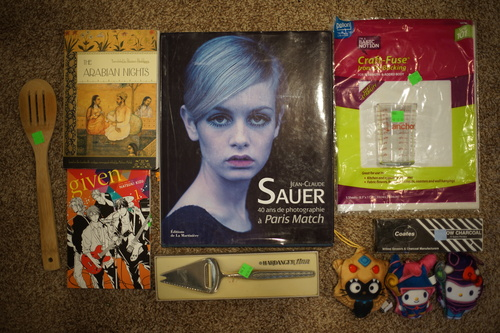

I survived playing another otome game. While I liked Bustafellows much more than Code:realize, I'm not particularly impressed with the genre so far. Perhaps they should just be rated in comparision to your average anime plot. Bustafellows would be pretty d&ng good in that case!

For a week, I've returned to my old town! No one has taken my old apartment, but someone has been so kind to let us stay at their house a block away from my old apartment. I miss my old place! I don't have nearly as much space anymore. I don't miss the job paying my rent there though.
My favorite part about being here is going to my favorite thrift stores! I haven't found a location that matches the quality and prices of the two I love here. There haven't been any recent Cool Thrift Hauls lately because the other stores all suck!!!!
It took me so long to find a replacement for the one I broke!!!
I'm getting so lucky!!!
I'm not sure if I tricked myself into buying another crappy Christian music CD, but I'll give it a listen.
I found a bunch of Modest Mouse the time I bought Hum and a few Smashing Pumpkins and I always thought about why I didn't bother with those CDs that day.
I didn't look this up because I thought it was Nelly Furtado and now I realize I've made a 25 cent mistake.
Nofoto. For Ryan.